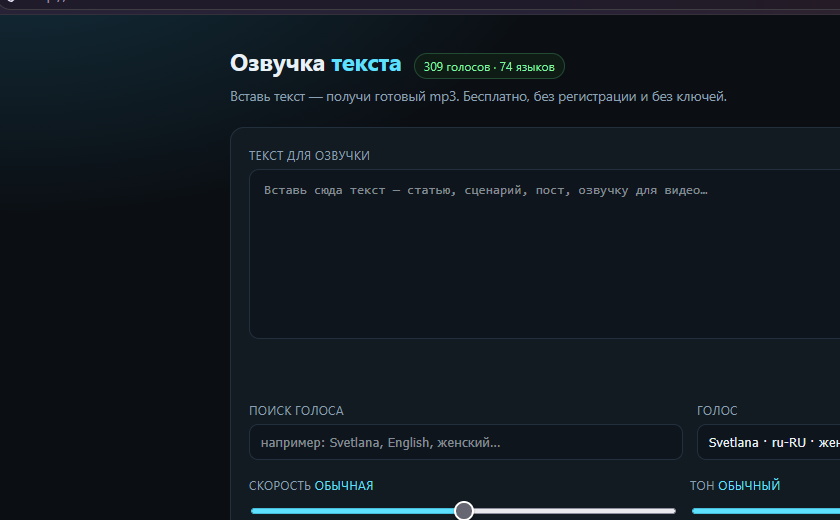

Бесплатная программа для Windows. 309 голосов, 74 языка. Без регистрации, без ключей, без подписки — файлы остаются у тебя на компьютере.

ozvuchka.exe и запусти — откроется окно программы, а не вкладка браузера.
Ничего устанавливать не нужно, иконка и версия в свойствах файла на месте.
Windows может предупредить, что файл без цифровой подписи: «Подробнее» → «Выполнить всё равно». Подписи нет, потому что она стоит денег, а программа бесплатная.
Если не доверяешь exe — есть сборка с исходниками (запуск через Node.js).
output рядом с программой.Это первая программа из моего публичного пути: я не умею программировать, но агент делает работу за меня — код пишет он, показываю и объясняю я. Программа останется бесплатной. Если она сэкономила тебе время — можно поддержать проект донатом, любой суммой. Донат ничего не открывает и ничего не блокирует.
Да, для синтеза речи: голоса предоставляет бесплатный сервис Microsoft Edge. Всё остальное — локально.
Нет, и это принципиально. Программа озвучивает текст готовыми голосами, а не клонирует чужие. Клонирование голоса известного человека без разрешения — это претензии по закону и бан аккаунта, а не «фича». Озвучка своим голосом по записи — следующая версия, и только для голосов, на которые у тебя есть право.
Внутри: сервер на Node.js, один HTML-файл интерфейса и каталог голосов. Никаких установщиков, служб и автозапуска. Открой server.js блокнотом — там весь код, он читается.
Вторая версия — озвучка своим голосом по короткой записи. Дальше — то, что попросят пользователи. Путь показываю в TikTok: @Deepseek_без_человека.